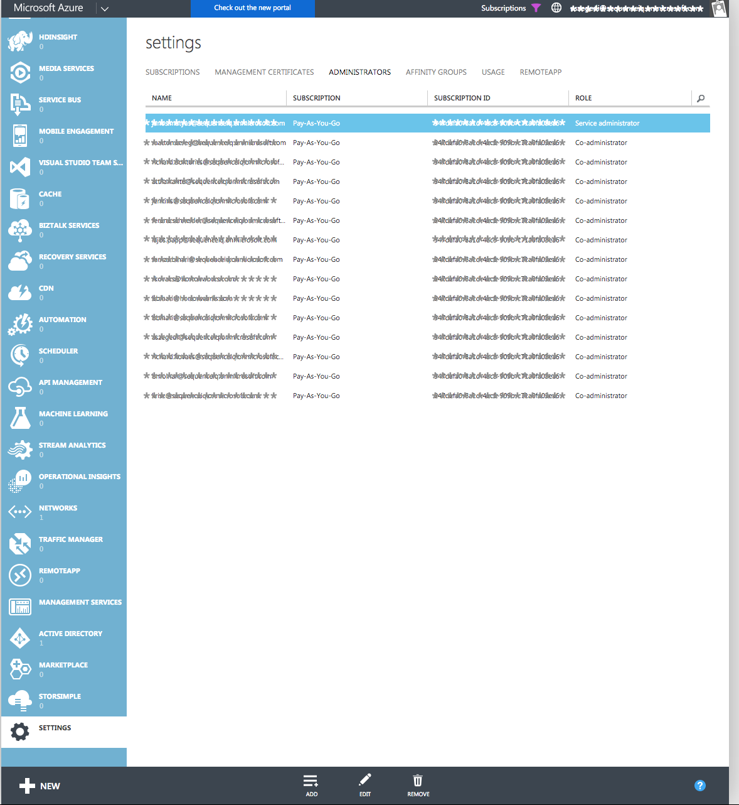
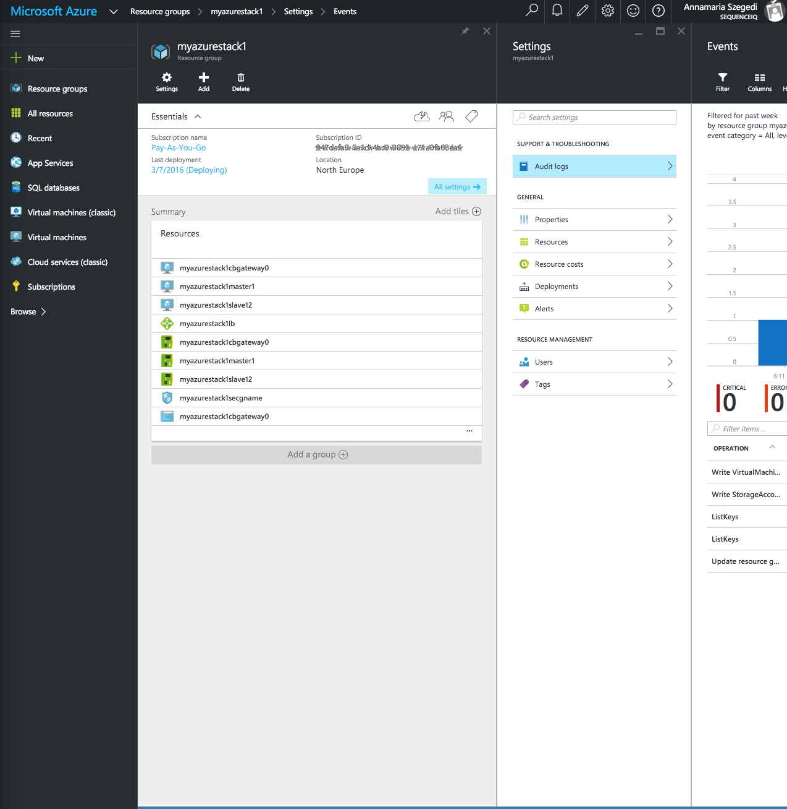

Azure Setup
On other cloud providers, we provide “public images” that are pre-built with the Cloudbreak Deployer. But on Azure, its a different process. We provide a way to launch Cloudbreak Deployer based on the new Azure Resource Manager Templates.
Deploy using the Azure Portal
To get started using the Azure Resource Manager template to install Cloudbreak, it is as simple as clicking here: 
Minimum and Recommended VM requirements: 8GB RAM, 10GB disk, 2 cores (The minimum instance type which is fit for cloudbreak is D2)
The following parameters are mandatory (beyond to the default values) for the new cbd Template!
On the Custom deployment panel:
- Please create a new
Resource group - Select an appropriate
Resource group location
On the Parameters panel:
- Select the same
LOCATIONas for the resource group PASSWORDmust be between 6-72 characters long and must satisfy at least 3 of password complexity requirements from the following:- Contains an uppercase character
- Contains a lowercase character
- Contains a numeric digit
- Contains a special character
Finally you should review the Legal terms from the Custom deployment panel:
- If you agree with the terms and conditions, just click on
Createbutton of this panel - Also click on the
Createbutton on theCustom deployment
Deployment takes about 15-20 minutes. You can track the progress on the resource group details. If any issue has occurred, open the
Audit logsfrom the settings. We have faced an interesting behaviour on the Azure Portal: All operations were successful on template deployment, but overall fail.
- Once it's successful done, you can reach the Cloudbreak UI
at:
http://<VM Public IP>:3000/- email: admin@example.com
- password: cloudbreak
Under the hood
Meanwhile Azure is creating the deployment, here is some information about what happens in the background:
- Start an instance from the official CentOS image
- So no custom image copy is needed, which would take about 30 minutes
- Use Docker VM Extension to install Docker
- Use CustomScript Extension to install
Cloudbreak Deployer (
cbd)
Cloudbreak Deployer Highlights
- The default SSH username for the Azure VMs is
cloudbreak. - Cloudbreak Deployer location is
/var/lib/cloudbreak-deploymenton the launchedcbdVM. This is thecbdroot folder there. - All
cbdactions must be executed from thecbdroot folder. - Most of the
cbdcommands requirerootpermissions. So it would be worth if you apply thesudo su.
Validate the started Cloudbreak Deployer
-
SSH to the launched Azure VM.
-
Most of the
cbdcommands requirerootpermissions. So it would be worth if you apply the:
sudo su
This is a MUST on Azure because the Customscript Extension which basically creates everything running as sudo and this is not modifiable.
- Open the
cloudbreak-deploymentdirectory:
cd /var/lib/cloudbreak-deployment
- Pre-installed Cloudbreak Deployer version and health:
cbd doctor
In case of
cbd updateis needed, please check the related documentation for Cloudbreak Deployer Update. Most of thecbdcommands requirerootpermissions.
- Started Cloudbreak Application logs:
cbd logs cloudbreak
Cloudbreak should start within a minute - you should see a line like this:
Started CloudbreakApplication in 36.823 seconds
Provisioning Prerequisites
We use the new Azure ARM in order to launch clusters. In order to work we need to create an Active Directory application with the configured name and password and adds the permissions that are needed to call the Azure Resource Manager API. Cloudbreak Deployer automates all this for you.
If you forget to configure these steps you will not able to create any resource with Cloudbreak
Azure access setup
If you do not have an Active Directory (AD) user then you have to configure it before deploying a cluster with Cloudbreak:
Why you need this? Read more here
- Go to
manage.windowsazure.com>Active Directory - Select one of your AD where you would like to create the new user
- You can configure your AD users on
Your active directory>Usersmenu
 Full size here.
Full size here.
- Here you can add the new user to AD. Simply click on
Add Userin the bottom of the pageTYPE OF USER: selectNew user in your organizationUSER NAME: type the new user name into the box- Fill out the name fields for the new user on the second page of the ADD USER window
- Submit the new user creation on the third window with the big green button
- Copy the password
Folo4965 - Click on the tick button in the bottom of the the ADD USER window
- You will see the new user in the
USERSlist
You have got a temporary password so you have to change it before you start using the new user.
- You need to add your AD user to the
manage.windowsazure.com>Settings>Administrators
 Full size here.
{kind=link}
- Here you can add the new user to Administrators. Simply click on
Addin the bottom of the pageEMAIL ADDRESS: copy the previously created user email address here- Select the appropriate
SUBSCRIPTIONfor the user - Click on the tick button in the bottom of the the ADD A CO-ADMINISTRATOR window
- You will see the new co-administrator a in the
ADMINISTRATORSlist
Azure application setup with Cloudbreak Deployer
In order for Cloudbreak to be able to launch clusters on Azure on your behalf you need to set up your Azure ARM application. If you do not want to create your ARM application via the Azure Web UI, we automated the related Azure configurations in the Cloudbreak Deployer.
If you use our Azure Template for Cloudbreak Deployer, you should:
- SSH to the Cloudbreak Deployer Virtual machine
cbdlocation is/var/lib/cloudbreak-deployment- all
cbdactions must be executed from thecbdfolder
Most of the
cbdcommands requirerootpermissions. Sosudo suhere would be worth for you.
You can setup your Azure Application with the following cbd command:
Why you need this? Read more here
cbd azure configure-arm --app_name myapp --app_password password123 --subscription_id 1234-abcd-efgh-1234
Other available options:
--app_name your new application name, app by default
--app_password your application password, password by default
--subscription_id your Azure subscription ID
--username your Azure username
--password your Azure password
The command applies the following steps:
- It creates an Active Directory application with the configured name, password
- It grants permissions to call the Azure Resource Manager API
Please use the output of the command when you creating your Azure credential in Cloudbreak. The major part of the output should be like this example:
Subscription ID: sdf324-26b3-sdf234-ad10-234dfsdfsd
App ID: 234sdf-c469-sdf234-9062-dsf324
Password: password123
App Owner Tenant ID: sdwerwe1-d98e-dsf12-dsf123-df123232
File system configuration
When starting a cluster with Cloudbreak on Azure, the default file system is “Windows Azure Blob Storage”. Hadoop has built-in support for the WASB file system so it can be used easily as HDFS.
Disks and blob storage
In Azure every data disk attached to a virtual machine is stored as a virtual hard disk (VHD) in a page blob inside an Azure storage account. Because these are not local disks and the operations must be done on the VHD files it causes degraded performance when used as HDFS. When WASB is used as a Hadoop file system the files are full-value blobs in a storage account. It means better performance compared to the data disks and the WASB file system can be configured very easily but Azure storage accounts have their own limitations as well. There is a space limitation for TB per storage account (500 TB) as well but the real bottleneck is the total request rate that is only 20000 IOPS where Azure will start to throw errors when trying to do an I/O operation. To bypass those limits Microsoft created a small service called DASH. DASH itself is a service that imitates the API of the Azure Blob Storage API and it can be deployed as a Microsoft Azure Cloud Service. Because its API is the same as the standard blob storage API it can be used almost in the same way as the default WASB file system from a Hadoop deployment. DASH works by sharding the storage access across multiple storage accounts. It can be configured to distribute storage account load to at most 15 scaleout storage accounts. It needs one more namespace storage account where it keeps track of where the data is stored. When configuring a WASB file system with Hadoop, the only required config entries are the ones where the access details are described. To access a storage account Azure generates an access key that is displayed on the Azure portal or can be queried through the API while the account name is the name of the storage account itself. A DASH service has a similar account name and key, those can be configured in the configuration file while deploying the cloud service.

Deploying a DASH service with Cloudbreak Deployer
We automated the deployment of DASH service in Cloudbreak Deployer. After cbd is installed, simply run the
following command to deploy a DASH cloud service with 5 scale out storage accounts:
cbd azure deploy-dash --accounts 5 --prefix dash --location "West Europe" --instances 3
The command applies the following steps:
- It creates the namespace account and the scale out storage accounts
- It builds the .cscfg configuration file based on the created storage account names and keys
- It generates an Account Name and an Account Key for the DASH service
- Finally it deploys the cloud service package file to a new cloud service
The WASB file system configured with DASH can be used as a data lake - when multiple clusters are deployed with the
same DASH file system configuration the same data can be accessed from all the clusters, but every cluster can have a
different service configured as well. In that case deploy as many DASH services with cbd as clusters with
Cloudbreak and configure them accordingly.
Containers within the storage account
Cloudbreak creates a new container in the configured storage account for each cluster with the following name
pattern cloudbreak-UNIQUE_ID. Re-using existing containers in the same account is not supported as dirty data can
lead to failing cluster installations. In order to take advantage of the WASB file system your data does not have to
be in the same storage account nor in the same container. You can add as many accounts as you wish through Ambari, by
setting the properties described here. Once you
added the appropriate properties you can use those storage accounts with the pre-existing data, like:
hadoop fs -ls wasb://data@youraccount.blob.core.windows.net/terasort-input/
IMPORTANT Make sure that your cloud account can launch instances using the new Azure ARM (a.k.a. V2) API and you have sufficient qouta (CPU, network, etc) for the requested cluster size.
Generate a new SSH key
All the instances created by Cloudbreak are configured to allow key-based SSH, so you'll need to provide an SSH public key that can be used later to SSH onto the instances in the clusters you'll create with Cloudbreak. You can use one of your existing keys or you can generate a new one.
To generate a new SSH keypair:
ssh-keygen -t rsa -b 4096 -C "your_email@example.com"
# Creates a new ssh key, using the provided email as a label
# Generating public/private rsa key pair.
# Enter file in which to save the key (/Users/you/.ssh/id_rsa): [Press enter]
You'll be asked to enter a passphrase, but you can leave it empty.
# Enter passphrase (empty for no passphrase): [Type a passphrase]
# Enter same passphrase again: [Type passphrase again]
After you enter a passphrase the keypair is generated. The output should look something like below.
# Your identification has been saved in /Users/you/.ssh/id_rsa.
# Your public key has been saved in /Users/you/.ssh/id_rsa.pub.
# The key fingerprint is:
# 01:0f:f4:3b:ca:85:sd:17:sd:7d:sd:68:9d:sd:a2:sd your_email@example.com
Later you'll need to pass the .pub file's contents to Cloudbreak and use the private part to SSH to the instances
Provisioning via Browser
You can log into the Cloudbreak application at http://<Public_IP>:3000/.
The main goal of the Cloudbreak UI is to easily create clusters on your own cloud provider account. This description details the AZURE setup - if you'd like to use a different cloud provider check out its manual.
This document explains the four steps that need to be followed to create Cloudbreak clusters from the UI:
- connect your AZURE account with Cloudbreak
- create some template resources on the UI that describe the infrastructure of your clusters
- create a blueprint that describes the HDP services in your clusters
- launch the cluster itself based on these template resource
Setting up Azure credentials
Cloudbreak works by connecting your AZURE account through so called Credentials, and then uses these credentials to create resources on your behalf. The credentials can be configured on the manage credentials panel on the Cloudbreak Dashboard.
Please read the Provisioning prerequisites where you can find the steps how can get the mandatory
Subscription ID,App ID,PasswordandApp Owner Tenant IDfor your Cloudbreak credential.
To create a new AZURE credential follow these steps:
- Fill out the new credential
Name- Only alphanumeric and lowercase characters (min 5, max 100 characters) can be applied
- Copy your AZURE Subscription ID to the
Subscription Idfield
 Full size here.
Full size here.
- Copy your AZURE Active Directory Application:
- ID to the
App Idfield - password to the
Passwordfield App Owner Tenant Idfield
- ID to the
 Full size here.
Full size here.
- Copy your SSH public key to the
SSH public keyfield- The SSH public key must be in OpenSSH format and it's private keypair can be used later to SSH onto every instance of every cluster you'll create with this credential.
- The SSH username for the AZURE instances is cloudbreak.
Any other parameter is optional here.
Public in accountmeans that all the users belonging to your account will be able to use this credential to create clusters, but cannot delete it.Cloudbreak is supporting simple rsa public key instead of X509 certificate file after 1.0.4 version
 Full size here.
Full size here.
Infrastructure templates
After your AZURE account is linked to Cloudbreak you can start creating resource templates that describe your clusters' infrastructure:
- templates
- networks
- security groups
When you create one of the above resource, Cloudbreak does not make any requests to AZURE. Resources are only created
on AZURE after the create cluster button has pushed. These templates are saved to Cloudbreak's database and can be
reused with multiple clusters to describe the infrastructure
Templates
Templates describe the instances of your cluster - the instance type and the attached volumes. A typical setup is to combine multiple templates in a cluster for the different types of nodes. For example you may want to attach multiple large disks to the datanodes or have memory optimized instances for Spark nodes.
The instance templates can be configured on the manage templates panel on the Cloudbreak Dashboard.
The Volume Type describes the Storage Account type which will be used for the attached disks. The only constraint is that the Premium storage can only be used
for DS instance types. For more details about the premium storage read this.
If Public in accountis checked all the users belonging to your account will be able to use this resource to create
clusters, but cannot delete it
Networks
Your clusters can be created in their own networks or in one of your already existing one. The subnet's IP range must be defined in
the Subnet (CIDR) field using the general CIDR notation.
Default AZURE Network
If you don't want to create or use your custom network, you can use the default-azure-network for all your
Cloudbreak clusters. It will create a new network with a 10.0.0.0/16 subnet every time a cluster is created.
Custom AZURE Network
If you'd like to deploy a cluster to a custom network you'll have to create a new network template on the manage networks panel.
You have the following options:
- Create a new virtual network and a new subnet: Every time a cluster is created with this kind of network setup a new virtual network and a new subnet with the specified IP range will be created for the instances on Azure.
- Use an existing subnet in an existing virtual network: Use this kind of network setup if you have an existing virtual network with one or more subnets on Azure and you'd like to start the instances of a cluster in one of those subnets. In this case you can define the
Subnet Identifierand theVirtual Network Identifierand theResource Group Identifierof your network. TheResource Group Identifieridentifies the resource group which contains your existing virtual network. TheVirtual Network Identifierand theSubnet Identifierwill tell Cloudbreak which network and subnet to use to launch the new instances.
IMPORTANT In case of existing subnet make sure you have enough room within your network space for the new instances. The provided subnet CIDR will be ignored, but the existing subnet's CIDR range will be used. The security group behavior will be changed in this case as well described in the security group section below.
If Public in account is checked all the users belonging to your account will be able to use this network template
to create clusters, but cannot delete it.
NOTE The new networks are created on AZURE only after the the cluster provisioning starts with the selected network template.
 Full size here.
Full size here.
Security groups
Security group templates are very similar to the security groups on Azure. They describe the allowed inbound traffic to the instances in the cluster. Currently only one security group template can be selected for a Cloudbreak cluster and all the instances have a public IP address so all the instances in the cluster will belong to the same security group. This may change in a later release.
Default Security Group
You can also use the two pre-defined security groups in Cloudbreak.
only-ssh-and-ssl: all ports are locked down except for SSH and the selected Ambari Server HTTPS (you can't access Hadoop services
outside of the virtual network):
- SSH (22)
- HTTPS (443)
all-services-port: all Hadoop services, SSH and HTTPS are accessible by default:
- SSH (22)
- HTTPS (443)
- Ambari (8080)
- Consul (8500)
- NN (50070)
- RM Web (8088)
- Scheduler (8030RM)
- IPC (8050RM)
- Job history server (19888)
- HBase master (60000)
- HBase master web (60010)
- HBase RS (16020)
- HBase RS info (60030)
- Falcon (15000)
- Storm (8744)
- Hive metastore (9083)
- Hive server (10000)
- Hive server HTTP (10001)
- Accumulo master (9999)
- Accumulo Tserver (9997)
- Atlas (21000)
- KNOX (8443)
- Oozie (11000)
- Spark HS (18080)
- NM Web (8042)
- Zeppelin WebSocket (9996)
- Zeppelin UI (9995)
- Kibana (3080)
- Elasticsearch (9200)
Custom Security Group
You can define your own security group by adding all the ports, protocols and CIDR range you'd like to use. The rules defined here doesn't need to contain the internal rules, those are automatically added by Cloudbreak to the security group on Azure.
IMPORTANT 443 and 22 ports needs to be there in every security group otherwise Cloudbreak won't be able to communicate with the provisioned cluster
If Public in account is checked all the users belonging to your account will be able to use this security group
template to create clusters, but cannot delete it.
NOTE The security groups are created on Azure only after the cluster provisioning starts with the selected security group template.
IMPORTANT If you use and existing virtual network and subnet the selected security group will only be applied to the selected Ambari Server node due to the lack of capability to attach multiple security groups to an existing subnet. If you'd like to open ports for Hadoop you must do it on your existing security group.
 Full size here.</sub
Full size here.</sub
Defining cluster services
Blueprints
Blueprints are your declarative definition of a Hadoop cluster. These are the same blueprints that are used by Ambari.
You can use the 3 default blueprints pre-defined in Cloudbreak or you can create your own ones.
Blueprints can be added from file, URL (an example blueprint) or the
whole JSON can be written in the JSON text box.
The host groups in the JSON will be mapped to a set of instances when starting the cluster. Besides this the services and components will also be installed on the corresponding nodes. Blueprints can be modified later from the Ambari UI.
NOTE Not necessary to define all the configuration in the blueprint. If a configuration is missing, Ambari will fill that with a default value.
If Public in account is checked all the users belonging to your account will be able to use this blueprint to
create clusters, but cannot delete or modify it.
 Full size here.
Full size here.
A blueprint can be exported from a running Ambari cluster that can be reused in Cloudbreak with slight modifications. There is no automatic way to modify an exported blueprint and make it instantly usable in Cloudbreak, the modifications have to be done manually. When the blueprint is exported some configurations are hardcoded for example domain names, memory configurations...etc. that won't be applicable to the Cloudbreak cluster
Cluster deployment
After all the cluster resources are configured you can deploy a new HDP cluster.
Here is a basic flow for cluster creation on Cloudbreak Web UI:
- Start by selecting a previously created Azure credential in the header.
- Open
create cluster
Configure Cluster tab
- Fill out the new cluster
name- Cluster name must start with a lowercase alphabetic character then you can apply lowercase alphanumeric and hyphens only (min 5, max 40 characters)
- Select a
Regionwhere you like your cluster be provisioned - Click on the
Setup Network and SecuritybuttonIf
Public in accountis checked all the users belonging to your account will be able to see the created cluster on the UI, but cannot delete or modify it.
Setup Network and Security tab
- Select one of the networks
- Select one of the security groups
- Click on the
Choose BlueprintbuttonIf
Enable securityis checked as well, Cloudbreak will install Key Distribution Center (KDC) and the cluster will be Kerberized. See more about it in the Kerberos section of this documentation.
Choose Blueprint tab
- Select one of the blueprint
- After you've selected a
Blueprint, you should be able to configure:- the templates
- the number of nodes for all of the host groups in the blueprint
- You need to select where you want to install the Ambari server to. Only 1 host group can be selected. If you want to install the Ambari server to a separate node, you need to extend your blueprint with a new host group which contains only 1 service: HDFS_CLIENT and select this host group for the Ambari server. Note: this host group cannot be scaled so it is not advised to select a 'slave' host group for this purpose.
- Click on the
Add File Systembutton
Add File System tab
- Select one of the file system that fits your needs
- After you've selected
WASBorDASH, you should configure:Storage Account NameStorage Account Access Key
- Click on the
Review and LaunchbuttonFile systemis a mandatory configuration for Azure. You can read more about WASB and DASH in the File System Configuration section.
Review and Launch tab
- After the
create and start clusterbutton has clicked Cloudbreak will start to create the cluster's resources on your Azure account.
Cloudbreak uses Azure Resource Manager to create the resources - you can check out the resources created by Cloudbreak
on
the Azure Portal Resource groups page.
 Full size here.
Full size here.
Besides these you can check the progress on the Cloudbreak Web UI itself if you open the new cluster's Event History.
 Full size here.
Full size here.
Advanced options
There are some advanced features when deploying a new cluster, these are the following:
Ambari Username This user will be used as admin user in Ambari. You can log in using this username on the Ambari UI.
Ambari Password The password associated with the Ambari username. This password will be also the default password for all required passwords which are not specified in the blueprint. E.g: hive DB password.
Minimum cluster size The provisioning strategy in case of the cloud provider cannot allocate all the requested nodes.
Validate blueprint This is selected by default. Cloudbreak validates the Ambari blueprint in this case.
Shipyard enabled cluster This is selected by default. Cloudbreak will start a Shipyard container which helps you to manage your containers.
Persistent Storage Name This is cbstore by default. Cloudbreak will copy the image into a storage which is not deleting under the termination. When you starting a new cluster then the provisioning will be much faster because of the existing image.
Attached Storage Type This is single storage for all vm by default. If are you using the default option then your whole cluster will by in one storage which could be a bottleneck in case of Azure. If you are using the separated storage for every vm then we will deploy as much storage account as many node you have and in this case IOPS limit concern just for one node.
Config recommendation strategy Strategy for configuration recommendations how will be applied. Recommended
configurations gathered by the response of the stack advisor.
NEVER_APPLYConfiguration recommendations are ignored with this option.ONLY_STACK_DEFAULTS_APPLYApplies only on the default configurations for all included services.ALWAYS_APPLYApplies on all configuration properties.
Cluster termination
You can terminate running or stopped clusters with the terminate button in the cluster details.
IMPORTANT Always use Cloudbreak to terminate the cluster. If that fails for some reason, try to delete the Azure resource group first. Instances are started in an Auto Scaling Group so they may be restarted if you terminate an instance manually!
Sometimes Cloudbreak cannot synchronize it's state with the cluster state at the cloud provider and the cluster can't
be terminated. In this case the Forced termination option can help to terminate the cluster at the Cloudbreak
side. If it has happened:
- You should check the related resources at the Azure Portal
- If it is needed you need to manually remove resources from there
 Full size here.
Full size here.
Interactive mode / Cloudbreak Shell
The goal with the Cloudbreak Shell (Cloudbreak CLI) was to provide an interactive command line tool which supports:
- all functionality available through the REST API or Cloudbreak Web UI
- makes possible complete automation of management task via scripts
- context aware command availability
- tab completion
- required/optional parameter support
- hint command to guide you on the usual path
Start Cloudbreak Shell
To start the Cloudbreak CLI use the following commands:
- Open your
cloudbreak-deploymentdirectory if it is needed. For example:
cd cloudbreak-deployment
- Start the
cbdfrom here if it is needed
cbd start
- In the root of your
cloudbreak-deploymentfolder apply:
cbd util cloudbreak-shell
At the very first time it will take for a while, because of need to download all the necessary docker images.
This will launch the Cloudbreak shell inside a Docker container then it is ready to use.
 Full size here.
Full size here.
IMPORTANT You have to copy all your files into the
cbdworking directory, what you would like to use in shell. For example if yourcbdworking directory is~/cloudbreak-deploymentthen copy your blueprint JSON, public ssh key file...etc. to here. You can refer to these files with their names from the shell.
Autocomplete and hints
Cloudbreak Shell helps to you with hint messages from the very beginning, for example:
cloudbreak-shell>hint
Hint: Add a blueprint with the 'blueprint add' command or select an existing one with 'blueprint select'
cloudbreak-shell>
Beyond this you can use the autocompletion (double-TAB) as well:
cloudbreak-shell>credential create --
credential create --AWS credential create --AZURE credential create --EC2 credential create --GCP credential create --OPENSTACK
Provisioning via CLI
Setting up Azure credential
Cloudbreak works by connecting your Azure account through so called Credentials, and then uses these credentials to create resources on your behalf. Credentials can be configured with the following command for example:
credential create --AZURE --name my-azure-credential --description "sample credential" --subscriptionId
your-azure-subscription-id --tenantId your-azure-application-tenant-id --appId
your-azure-application-id --password YourApplicationPassword --sshKeyString "ssh-rsa AAAAB3***etc."
Cloudbreak is supporting simple rsa public key instead of X509 certificate file after 1.0.4 version
NOTE that Cloudbreak does not set your cloud user details - we work around the concept of Access Control Service (ACS). You should have already a valid Azure Subscription and Application. You can find further details here.
Alternatives to provide SSH Key:
- you can upload your public key from an url:
—sshKeyUrl - or you can add the path of your public key:
—sshKeyPath
You can check whether the credential was created successfully
credential list
You can switch between your existing credentials
credential select --name my-azure-credential
Infrastructure templates
After your Azure account is linked to Cloudbreak you can start creating resource templates that describe your clusters' infrastructure:
- security groups
- networks
- templates
When you create one of the above resource, Cloudbreak does not make any requests to Azure. Resources are only created
on Azure after the cluster create has applied. These templates are saved to Cloudbreak's database and can be
reused with multiple clusters to describe the infrastructure.
Templates
Templates describe the instances of your cluster - the instance type and the attached volumes. A typical setup is to combine multiple templates in a cluster for the different types of nodes. For example you may want to attach multiple large disks to the datanodes or have memory optimized instances for Spark nodes.
A template can be used repeatedly to create identical copies of the same stack (or to use as a foundation to start a new stack). Templates can be configured with the following command for example:
template create --AZURE --name my-azure-template --description "sample description" --instanceType Standard_D4 --volumeSize 100 --volumeCount 2 --volumeType Standard_LRS
The Volume Type describes the Storage Account type which will be used for the attached disks. The only constraint is that the Premium storage can only be used
for DS instance types. For more details about the premium storage read this.
Other available option here is --publicInAccount. If it is true, all the users belonging to your account will be able
to use this template to create clusters, but cannot delete it.
You can check whether the template was created successfully
template list
Networks
Your clusters can be created in their own networks or in one of your already existing one. If you choose an
existing network, it is possible to create a new subnet within the network. The subnet's IP range must be defined in
the Subnet (CIDR) field using the general CIDR notation.
Default AZURE Network
If you don't want to create or use your custom network, you can use the default-azure-network for all your
Cloudbreak clusters. It will create a new network with a 10.0.0.0/16 subnet and 10.0.0.0/8 address prefix every
time a cluster is created.
Custom AZURE Network
If you'd like to deploy a cluster to a custom network you'll have to apply the following command:
network create --AZURE --name my-azure-network --addressPrefix 192.168.123.123 --subnet 10.0.0.0/16
IMPORTANT Please make sure the defined subnet and theirs address prefixes here doesn't overlap with any of your already deployed subnet and its already used address prefix in the network, because of the validation only happens after the cluster creation starts.
In case of existing subnet make sure you have enough room within your network space for the new instances. The provided subnet CIDR will be ignored, but a proper CIDR range will be used.
You can check whether the network was created successfully
network list
--addressPrefix This list will be appended to the current list of address prefixes.
- The address prefixes in this list should not overlap between them.
- The address prefixes in this list should not overlap with existing address prefixes in the network.
You can find more details about the AZURE Address Prefixes here.
If --publicInAccount is true, all the users belonging to your account will be able to use this network template
to create clusters, but cannot delete it.
NOTE The new networks are created on AZURE only after the the cluster provisioning starts with the selected network template.
Defining cluster services
Blueprints
Blueprints are your declarative definition of a Hadoop cluster. These are the same blueprints that are used by Ambari.
You can use the 3 default blueprints pre-defined in Cloudbreak or you can create your own ones. Blueprints can be added from file or URL (an example blueprint).
The host groups in the JSON will be mapped to a set of instances when starting the cluster. Besides this the services and components will also be installed on the corresponding nodes. Blueprints can be modified later from the Ambari UI.
NOTE Not necessary to define all the configuration in the blueprint. If a configuration is missing, Ambari will fill that with a default value.
blueprint add --name my-blueprint --description "sample description" --file <the path of the blueprint>
Other available options:
--url the url of the blueprint
--publicInAccount If it is true, all the users belonging to your account will be able to use this blueprint to create
clusters, but cannot delete it.
You can check whether the blueprint was created successfully
blueprint list
A blueprint can be exported from a running Ambari cluster that can be reused in Cloudbreak with slight modifications. There is no automatic way to modify an exported blueprint and make it instantly usable in Cloudbreak, the modifications have to be done manually. When the blueprint is exported some configurations are hardcoded for example domain names, memory configurations..etc. that won't be applicable to the Cloudbreak cluster.
Metadata show
You can check the stack metadata with
stack metadata --name myawsstack --instancegroup master
Other available options:
--id In this case you can select a stack with id.
--outputType In this case you can modify the outputformat of the command (RAW or JSON).
Cluster deployment
After all the cluster resources are configured you can deploy a new HDP cluster. The following sub-sections show you a basic flow for cluster creation with Cloudbreak Shell.
Select credential
Select one of your previously created Azure credential:
credential select --name my-azure-credential
Select blueprint
Select one of your previously created blueprint which fits your needs:
blueprint select --name multi-node-hdfs-yarn
Configure instance groups
You must configure instance groups before provisioning. An instance group define a group of nodes with a specified template. Usually we create instance groups for host groups in the blueprint. For Ambari server only 1 host group can be specified. If you want to install the Ambari server to a separate node, you need to extend your blueprint with a new host group which contains only 1 service: HDFS_CLIENT and select this host group for the Ambari server. Note: this host group cannot be scaled so it is not advised to select a 'slave' host group for this purpose.
instancegroup configure --instanceGroup master --nodecount 1 --templateName minviable-aws --ambariServer true
instancegroup configure --instanceGroup slave_1 --nodecount 1 --templateName minviable-aws --ambariServer false
Other available option:
--templateId Id of the template
Select network
Select one of your previously created network which fits your needs or a default one:
network select --name default-azure-network
Select security group
Select one of your previously created security which fits your needs or a default one:
securitygroup select --name all-services-port
Create stack / Create cloud infrastructure
Stack means the running cloud infrastructure that is created based on the instance groups configured earlier
(credential, instancegroups, network, securitygroup). Same as in case of the API or UI the new cluster will
use your templates and by using Azure ARM will launch your cloud stack. Use the following command to create a
stack to be used with your Hadoop cluster:
stack create --name myazurestack --region "North Europe"
The infrastructure is created asynchronously, the state of the stack can be checked with the stack show command. If
it reports AVAILABLE, it means that the virtual machines and the corresponding infrastructure is running at the cloud provider.
Other available option is:
--wait - in this case the create command will return only after the process has finished.
--persistentStorage - This is cbstore by default. Cloudbreak will copy the image into a storage which is not deleting under the termination. When you starting a new cluster then the provisioning will be much faster because of the existing image.
--attachedStorageType - This is SINGLE by default. If you are using the default option then your whole cluster will by in one storage which could be a bottleneck in case of Azure. If you are using the PER_VM then we will deploy as much storage account as many node you have and in this case IOPS limit concern just for one node.
Create a Hadoop cluster / Cloud provisioning
You are almost done! One more command and your Hadoop cluster is starting! Cloud provisioning is done once the cluster is up and running. The new cluster will use your selected blueprint and install your custom Hadoop cluster with the selected components and services.
cluster create --description "my first cluster"
Other available option is --wait - in this case the create command will return only after the process has finished.
You are done! You have several opportunities to check the progress during the infrastructure creation then provisioning:
- Cloudbreak uses ARM to create the resources - you can check out the resources created by Cloudbreak on the Azure Portal Resource groups page.
 Full size here.
{kind=link}
- If stack then cluster creation have successfully done, you can check the Ambari Web UI. However you need to know the
Ambari IP (for example:
http://23.101.60.49:8080):- You can get the IP from the CLI as a result (
ambariServerIp 23.101.60.49) of the following command:
- You can get the IP from the CLI as a result (
cluster show
 Full size here.
Full size here.
- Besides these you can check the entire progress and the Ambari IP as well on the Cloudbreak Web UI itself. Open the
new cluster's
detailsand itsEvent Historyhere.
 Full size here.
Full size here.
Stop cluster
You have the ability to stop your existing stack then its cluster if you want to suspend the work on it.
Select a stack for example with its name:
stack select --name my-stack
Other available option to define a stack is its --id.
Every time you should stop the cluster first then the stack. So apply following commands to stop the previously
selected stack:
cluster stop
stack stop
Restart cluster
Select your stack that you would like to restart after this you can apply:
stack start
After the stack has successfully restarted, you can restart the related cluster as well:
cluster start
Upscale cluster
If you need more instances to your infrastructure, you can upscale your selected stack:
stack node --ADD --instanceGroup host_group_slave_1 --adjustment 6
Other available option is --withClusterUpScale - this indicates also a cluster upscale after the stack upscale. You
can upscale the related cluster separately if you want to do this:
cluster node --ADD --hostgroup host_group_slave_1 --adjustment 6
Downscale cluster
You also can reduce the number of instances in your infrastructure. After you selected your stack:
cluster node --REMOVE --hostgroup host_group_slave_1 --adjustment -2
Other available option is --withStackDownScale - this indicates also a stack downscale after the cluster downscale.
You can downscale the related stack separately if you want to do this:
stack node --REMOVE --instanceGroup host_group_slave_1 --adjustment -2
Cluster termination
You can terminate running or stopped clusters with
stack terminate --name myawsstack
Other available option is --wait - in this case the terminate command will return only after the process has finished.
IMPORTANT Always use Cloudbreak to terminate the cluster. If that fails for some reason, try to delete the CloudFormation stack first. Instances are started in an Auto Scaling Group so they may be restarted if you terminate an instance manually!
Sometimes Cloudbreak cannot synchronize it's state with the cluster state at the cloud provider and the cluster can't
be terminated. In this case the Forced termination option on the Cloudbreak Web UI can help to terminate the cluster
at the Cloudbreak side. If it has happened:
- You should check the related resources at the AWS CloudFormation
- If it is needed you need to manually remove resources from ther
Silent mode
With Cloudbreak Shell you can execute script files as well. A script file contains shell commands and can
be executed with the script cloudbreak shell command
script <your script file>
or with the cbd util cloudbreak-shell-quiet command
cbd util cloudbreak-shell-quiet < example.sh
IMPORTANT You have to copy all your files into the
cbdworking directory, what you would like to use in shell. For example if yourcbdworking directory is ~/cloudbreak-deployment then copy your script file to here.
Example
The following example creates a hadoop cluster with hdp-small-default blueprint on Standard_D3 instances with
2X100G attached disks on default-azure-network network using all-services-port security group. You should copy
your ssh public key file into your cbd working directory with name id_rsa.pub and paste your Azure credentials in
the parts with <...> highlight.
credential create --AZURE --description "credential description" --name myazurecredential --subscriptionId <your Azure subscription id> --appId <your Azure application id> --tenantId <your tenant id> --password <your Azure application password> --sshKeyPath id_rsa.pub
credential select --name myazurecredential
template create --AZURE --name azuretemplate --description azure-template --instanceType Standard_D3 --volumeSize 100
--volumeCount 2
blueprint select --name hdp-small-default
instancegroup configure --instanceGroup host_group_master_1 --nodecount 1 --templateName azuretemplate --ambariServer true
instancegroup configure --instanceGroup host_group_master_2 --nodecount 1 --templateName azuretemplate --ambariServer false
instancegroup configure --instanceGroup host_group_master_3 --nodecount 1 --templateName azuretemplate --ambariServer false
instancegroup configure --instanceGroup host_group_client_1 --nodecount 1 --templateName azuretemplate --ambariServer false
instancegroup configure --instanceGroup host_group_slave_1 --nodecount 3 --templateName azuretemplate --ambariServer false
network select --name default-azure-network
securitygroup select --name all-services-port
stack create --AZURE --name my-first-stack --region "West US" --wait true
cluster create --description "My first cluster" --wait true
Congratulations! Your cluster should now be up and running on this way as well. To learn more about Cloudbreak and provisioning, we have some interesting insights for you.
Edit on GitHub